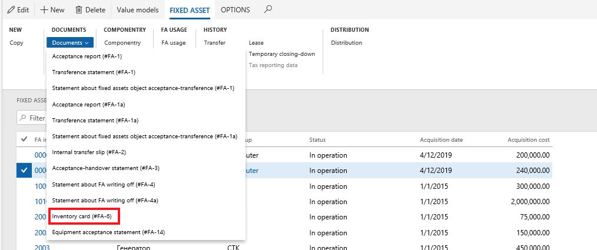
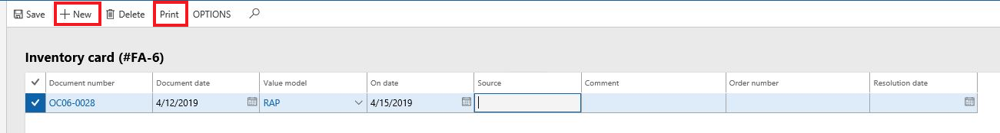
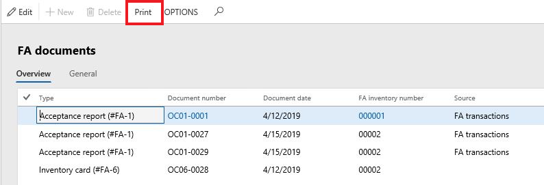

Unified printing forms for fixed assets (Russia)
The following unified printing forms for fixed assets are supported.
| Form code | Form name |
|---|---|
| #FA-1 | Acceptance report (excluding building, structures) |
| #FA-1 | Statement about fixed assets object acceptance-transference |
| #FA-1 | Transference statement |
| #FA-1a | Acceptance report (building, structures) |
| #FA-1a | Statement about fixed assets object acceptance-transference |
| #FA-1a | Transference statement |
| #FA-2 | Internal transfer slip |
| #FA-3 | Acceptance-handover statement |
| #FA-4 | Statement about FA writing off (excluding vehicles) |
| #FA-4a | Statement about FA writing off (vehicles) |
| #FA-6 | Fixed asset inventory card |
| #FA-14 | Equipment acceptance statement |
Set up number sequences for numerating fixed asset forms
To have automatic numbering on printing forms, you need to set up number sequences on the Fixed asset parameters page (Fixed asset (Russia) > Setup > Parameters, Document tab, Document types FastTab). You should set up the number sequences for all printing forms that you are going to print.
Create unified printing forms
Unified printing forms can be created from:
- Fixed asset transactions
- Fixed asset record – only Fixed asset inventory card (#FA-6)
- Transfer history
The following table provides the sources and path for unified printing forms that are located under Fixed asset (Russia) > Common > Fixed assets.
| Form code | Form name | Source |
|---|---|---|
| #FA-1 | Acceptance report (excluding building, structures) | Value models > Transactions > Documents > Documents |
| #FA-1 | Statement about fixed assets object acceptance-transference | History > Transfer > Documents |
| #FA-1 | Transference statement | Value models > Transactions > Documents > Documents |
| #FA-1a | Acceptance report (building, structures) | Value models > Transactions > Documents > Documents |
| #FA-1a | Statement about fixed assets object acceptance-transference | History > Transfer > Documents |
| #FA-1a | Transference statement | Value models > Transactions > Documents > Documents |
| #FA-2 | Internal transfer slip | History > Transfer > Documents |
| #FA-3 | Acceptance-handover statement | Value models/ Transactions > Documents > Documents |
| #FA-4 | Statement about FA writing off (excluding vehicles) | Value models > Transactions > Documents > Documents |
| #FA-4a | Statement about FA writing off (vehicles) | Value models > Transactions > Documents > Documents |
| #FA-6 | Fixed asset inventory card | Highlight the fixed asset record and then select Documents > Documents |
| #FA-14 | Equipment acceptance statement | Value models > Transactions > Documents > Documents |
Note
It is possible to print Fixed asset inventory card (#FA-6) only when fixed assets are put into operation with the transaction type, Putting into operation.
The system saves the information of all printing forms on a special list page. This page can be opened from a fixed asset transaction, transfer history, or from a fixed asset record (#FA-6 only).
For example, to create a Fixed asset inventory card (#FA-6):
- Go to Fixed asset (Russia) > Common > Fixed assets.
- Select the Fixed assets tab, and then on the Action Pane, select Documents > Documents > Inventory card (#FA6).

- Click New in the Inventory card (#FA-6) page list to create the inventory card for the value model.

After the record is created, you can print the unified form from this page list.
Note
You can use this procedure to create and print other unified forms.
Print pro forms of unified forms
All pro forms can be printed from a fixed asset record, when the transaction that corresponds to the document type has not yet been posted. In this case, the document number can be set manually. However, it is not controlled and saved in the system and the data in the pro forms is partially entered.
Note
It is not possible to print pro form of Fixed asset inventory card (#FA-6).
- To print pro forms, go to Fixed asset (Russia) > Common > Fixed assets and select a fixed asset record.
- On the Fixed assets tab, select Documents > Documents and then select the document to print.
Print unified forms
You can print existing unified printing forms from different places, including:
- Where the unified printing form was originally created. For more information, see the Create unified printing forms section earlier in this topic.
- From a fixed asset record.
- From the Inquiries page.
Print unified forms from a fixed asset record
To print existing unified printing forms from a fixed asset record, follow these steps:
- Select the fixed asset record and then on the Action Pane, select Documents > Documents.
- Select the unified printing form. If you are printing more than one document, the page list for corresponded document type is displayed.
- Highlight the record to print, and then select Print.
If there is only one unified printing form document for the selected fixed asset, then this document will be output by default.
Print unified forms from Inquiries
To print documents that are created from inquiries, go to Fixed assets (Russia) > Inquiries > Documents. Highlight the document to print and then select Print.
